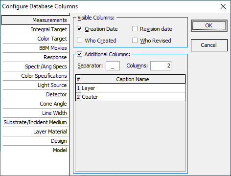

Configure Database Columns
Right-clicking the database command Columns… invokes this dialog.
Using the check boxes for Creation Date, Revision Date, Who Created, and Who Revised, you can show and hide the corresponding database columns. Each database (selected with the tabs on the right side of the dialog) can be configured independently.
This dialog also allows you to add customized columns to the database window. When the Additional Columns option is active, file names with the Separator symbol (default is - underscore) are decoded on-the-fly and displayed separately in the additional columns. The number of columns and their Caption Names can be configured in the spreadsheet below.
For the Layer Material and Substrate databases, you have the option to activate additional Re(n) and Im(n) columns. In this case, numerical values of the refractive index are displayed for the Thickness Units Reference Wavelength.

Note: Using Re(n) and Im(n), you can sort and filter database items. This feature is very convenient for large databases with many materials.